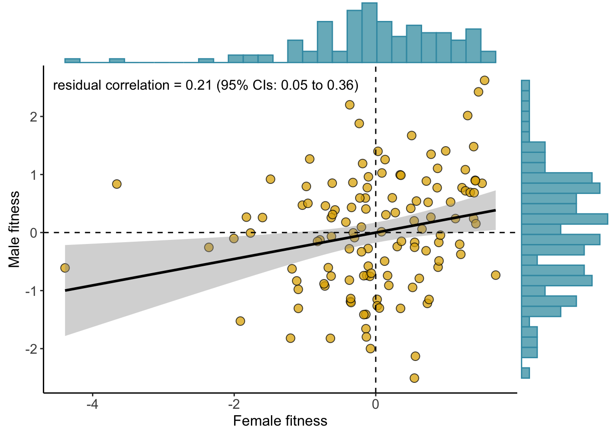
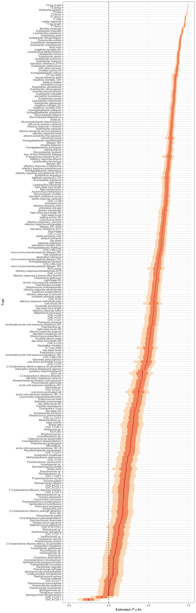
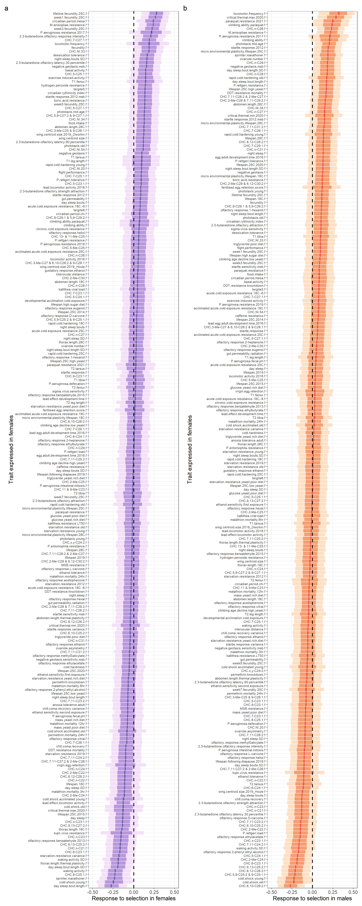
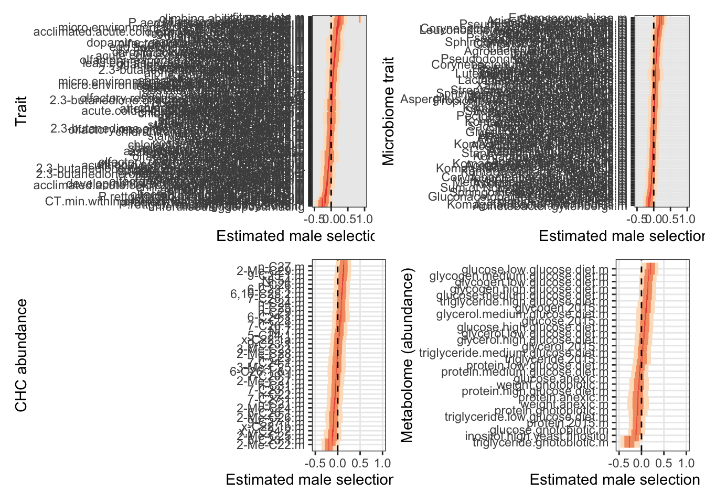
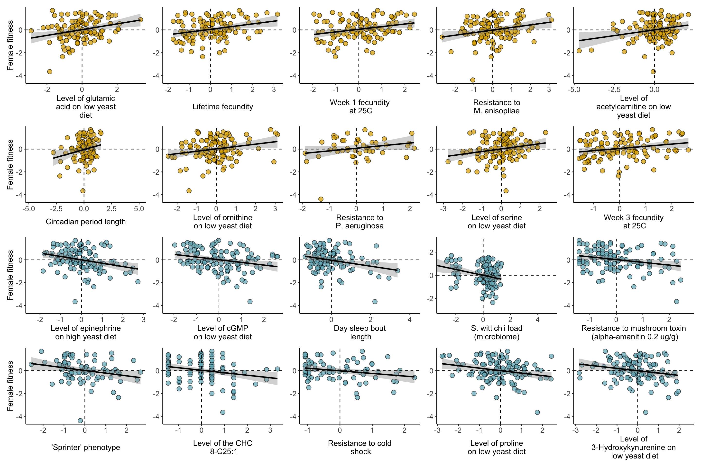
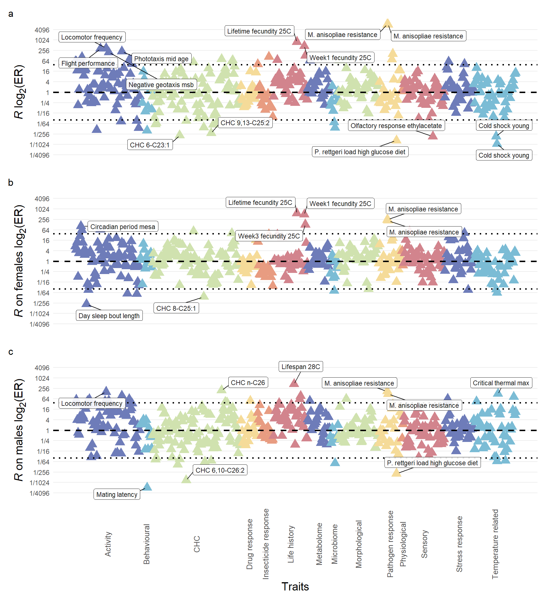

Intralocus sexual conflict in the DGRP
Thomas Keaney and Luke Holman
25/06/2021
Last updated: 2021-07-28
Checks: 7 0
Knit directory: DGRP_sexual_conflict/
This reproducible R Markdown analysis was created with workflowr (version 1.6.2). The Checks tab describes the reproducibility checks that were applied when the results were created. The Past versions tab lists the development history.
Great! Since the R Markdown file has been committed to the Git repository, you know the exact version of the code that produced these results.
Great job! The global environment was empty. Objects defined in the global environment can affect the analysis in your R Markdown file in unknown ways. For reproduciblity it’s best to always run the code in an empty environment.
The command set.seed(20210706) was run prior to running the code in the R Markdown file. Setting a seed ensures that any results that rely on randomness, e.g. subsampling or permutations, are reproducible.
Great job! Recording the operating system, R version, and package versions is critical for reproducibility.
Nice! There were no cached chunks for this analysis, so you can be confident that you successfully produced the results during this run.
Great job! Using relative paths to the files within your workflowr project makes it easier to run your code on other machines.
Great! You are using Git for version control. Tracking code development and connecting the code version to the results is critical for reproducibility.
The results in this page were generated with repository version 959123f. See the Past versions tab to see a history of the changes made to the R Markdown and HTML files.
Note that you need to be careful to ensure that all relevant files for the analysis have been committed to Git prior to generating the results (you can use wflow_publish or wflow_git_commit). workflowr only checks the R Markdown file, but you know if there are other scripts or data files that it depends on. Below is the status of the Git repository when the results were generated:
Ignored files:
Ignored: .DS_Store
Ignored: .Rhistory
Ignored: .Rproj.user/
Untracked files:
Untracked: Selection_differential_plot.pdf
Untracked: data/S_female.csv
Untracked: fits/
Note that any generated files, e.g. HTML, png, CSS, etc., are not included in this status report because it is ok for generated content to have uncommitted changes.
These are the previous versions of the repository in which changes were made to the R Markdown (analysis/Main_analysis.Rmd) and HTML (docs/Main_analysis.html) files. If you’ve configured a remote Git repository (see ?wflow_git_remote), click on the hyperlinks in the table below to view the files as they were in that past version.
| File | Version | Author | Date | Message |
|---|---|---|---|---|
| Rmd | 959123f | tkeaney | 2021-07-28 | trying to fix a bug |
| html | 769e48d | tkeaney | 2021-07-28 | Build site. |
| Rmd | 340c41b | tkeaney | 2021-07-28 | sexual dimorphism calculation added |
| html | 4018580 | tkeaney | 2021-07-28 | Build site. |
| Rmd | 65b2597 | tkeaney | 2021-07-28 | sexual dimorphism calculation added |
| html | 83a0c4f | tkeaney | 2021-07-28 | Build site. |
| Rmd | ddea55e | tkeaney | 2021-07-28 | sexual dimorphism calculation added |
| html | b364d30 | tkeaney | 2021-07-23 | Build site. |
| Rmd | e404cf9 | tkeaney | 2021-07-23 | progression on selection calculations |
| html | 32f107f | tkeaney | 2021-07-23 | Build site. |
| Rmd | 6aad8a8 | tkeaney | 2021-07-23 | progression on selection calculations |
| html | 11a8390 | tkeaney | 2021-07-07 | Build site. |
| Rmd | 42b8f12 | tkeaney | 2021-07-07 | Get the site up and running |
Load packages and the data
First load the packages
library(tidyverse)
library(googlesheets4) # for reading google sheets
library(pheatmap) # for heatmaps
library(RColorBrewer) # for custom colours
library(rcartocolor) # cool colours
library(wesanderson) # cool colours
library(kableExtra) # for scrolling tables
library(pander) # more tables
library(patchwork) # for cool plots
library(brms) # for bayesian models
library(tidybayes) # for more bayesian things
library(shiny) # for interactive app
library(DT) # for interactive tables
library(broom) # convert results of functions into tables
library(ggExtra) # for marginal plots
library(ggtips) # for hovering tooltips in R shiny
library(ggtext) # for markdown features in ggplot
library(job) # to run things in the backgroundNow load the data. Correlation analysis is not robust when sample sizes are small, so we only include traits that have been measured in 80+ lines.
DGRP_data <- read_csv("data/all.dgrp.phenos_unscaled.csv")
# fix the typo (temporary - keep until we reload the data from google sheets)
DGRP_data$Trait <-recode(DGRP_data$Trait, gustatory.reponse.ethanol.m = "gustatory.response.ethanol.m")
# Now trim the dataset so that it only includes traits that have been measured in 80+ lines - we are left with 905 traits from an original 1119
DGRP_subset <- DGRP_data %>%
group_by(Trait) %>%
filter(length(line) > 80) %>%
ungroup()
# Add a study ID variable
DGRP_subset <-
DGRP_subset %>%
group_by(Reference) %>%
mutate(study_ID = cur_group_id()) %>%
arrange(study_ID) %>%
ungroup()
# Assign each trait to a category based on whether it was measured in 1) both sexes separately, 2) just females, 3) just males or 4) both sexes together. We can use a shortcut and use the study IDs as each study tends to be consistent with their measurement approach (with 4 exceptions).
# This is dangerous coding. Using the ID number rather than the name can easily lead to an error. Consider changing.
DGRP_subset <-
DGRP_subset %>%
mutate(rmf_applicable = if_else(study_ID == "3" | study_ID == "5" | study_ID == "7" | study_ID == "8" | study_ID == "9" | study_ID == "11" | study_ID == "13" | study_ID == "19" | study_ID == "20" | study_ID == "21" | study_ID == "23" | study_ID == "24" | study_ID == "26" | study_ID == "27" | study_ID == "28" | study_ID == "34" | study_ID == "37" | study_ID == "40" | study_ID == "43" | study_ID == "48" | study_ID == "49" | study_ID == "54" | study_ID == "55" | study_ID == "57" | study_ID == "64" | study_ID == "65" | study_ID == "71" | study_ID == "72" | study_ID == "73" | study_ID == "75"| study_ID == "76", "YES", "NO"))
# Above, we identified the studies that measured traits in the sexes separately. However, some studies measure multiple traits, some of which they only measure in one sex or both (e.g. larval traits are often measured with the sexes pooled). Below we remove the specific traits that are not measured in both sexes separately from our already trimmed data
DGRP_rmf <-
DGRP_subset %>%
filter(rmf_applicable == "YES") %>%
filter(Trait != "anoxia.tolerance.larval",
Trait != "CHC.11 & 9-Me-C23.f",
Trait != "CHC.13- & 11-Me-C25.f",
Trait != "CHC.2-Me-C26.m",
Trait !="CHC.2-Me-C27.m",
Trait !="CHC.2-Me-C28 & 7,11-C29:2.f",
Trait != "CHC.2-Me-C28.m",
Trait != "CHC.2-Me-C29 & 8,12-C30:2.f",
Trait != "CHC.2-Me-C29.m",
Trait != "CHC.2-Me-C30.f",
Trait != "CHC.3-Me-C23.m",
Trait != "CHC.3-Me-C25 & 9-C26:1.f",
Trait != "CHC.3-Me-C25.m",
Trait != "CHC.3-Me-C27 & 6,10-C28:2 & 9-C28:1.f",
Trait != "CHC.5,9-C25:2 & 9-C25:1.f",
Trait != "CHC.5,9-C27:2 & 9-C27:1.f",
Trait != "CHC.5-C27:1.f",
Trait != "CHC.5-Me-C25.f",
Trait != "CHC.6,10-C26:2.f",
Trait != "CHC.6-C26:1 & i.m",
Trait != "CHC.7,11-C23:2.f",
Trait != "CHC.7,11-C24:2.f",
Trait != "CHC.7,11-C25:2.f",
Trait != "CHC.7,11-C26:2.f",
Trait != "CHC.7,11-C27:2 & 2-Me-C26.f",
Trait != "CHC.7,11-C28:2 & 2-Me-C27.f",
Trait != "CHC.7,11-C31:2.f",
Trait != "CHC.7-C24:1.m",
Trait != "CHC.8,12-C26:2.f",
Trait != "CHC.8,12-C28:2.f",
Trait != "CHC.8-C25:1.f",
Trait != "CHC.9,13-C25:2.f",
Trait != "CHC.9,13-C27:2.f",
Trait != "CHC.9-C25:1.m",
Trait != "CHC.9-C27:1.m",
Trait != "CHC.9-C29:1 & 5,9-C29:2.f",
Trait != "CHC.n-C25.m",
Trait != "CHC.NI.20.f",
Trait != "CHC.NI.33.f",
Trait != "CHC.NI.34.f",
Trait != "CHC.NI.7.m",
Trait != "CHC.x-C22:1a.m",
Trait != "CHC.x-C22:1b.m",
Trait != "CHC.x-C23:1.f",
Trait != "kallithea.viral.load.f")
# Make a female trait dataset
DGRP_rf_unscaled <-
DGRP_rmf %>% filter(Sex == "Female") %>%
rename(Female_trait_value = trait_value) %>%
select(-c(Sex, `Trait description`, study_ID, rmf_applicable)) %>%
mutate(Trait = gsub('.{2}$', '', Trait)) # remove the final two characters from the name of each trait: .f
DGRP_rf <-
DGRP_rf_unscaled %>%
group_by(Trait) %>% # group the data by trait so that scaling works on a per trait basis
mutate(Female_trait_value = as.numeric(scale(Female_trait_value))) %>% # scale the data for each trait
ungroup()
# Make a male trait dataset
DGRP_rm_unscaled <-
DGRP_rmf %>% filter(Sex == "Male") %>%
rename(Male_trait_value = trait_value) %>%
select(-c(Sex, `Trait description`, study_ID, rmf_applicable)) %>%
mutate(Trait = gsub('.{2}$', '', Trait)) # remove the final two characters from the name of each trait: .m
DGRP_rm <-
DGRP_rm_unscaled %>%
group_by(Trait) %>% # group the data by trait so that scaling works on a per trait basis
mutate(Male_trait_value = as.numeric(scale(Male_trait_value))) %>% # scale the data for each trait
ungroup()
# Join the two together
rfm_unscaled_data <- full_join(DGRP_rf_unscaled, DGRP_rm_unscaled)
rfm_data <- full_join(DGRP_rf, DGRP_rm)
# Now return to our larger tibble: DGRP_subset. Change the format of the data and scale it.
# This next section changes the format of the data. Each row represents a single line, while each column represents a trait and contains the lines trait mean. Scaling is also applied to each trait value, so that each trait has a mean of 0 and an SD of 1. This makes the variation found for each trait broadly comparable with all other traits.
DGRP_subset_scaled <-
split(DGRP_subset, DGRP_subset$Trait) %>% # split divides the data into trait groups
lapply(function(x){
trait_name <- x$Trait[1]
x <- x[,c(1,4)]
names(x) <- c("line", "value")
x <- x %>%
group_by(line) %>%
summarise(mean = mean(value))
names(x) <- c("line", trait_name)
x}) %>%
purrr::reduce(full_join, by = "line", match = "first") %>%
mutate_at(vars(-("line")), ~ as.numeric(scale(.x))) # this is the scaling step\(~\)
Calculate the intersex genetic correlation for fitness rAw fm
# Note that because we are using standarised data, the intercept will always = 0 and the sigma = 1 (we have no predictors so sigma just predicts the population SD). We make the intercept 0 because we have standardised the mean for every trait to = 0. We fix sigma to 0, which makes our estimate more precise. We make sigma = 0 rather than 1 because brms by default actually models the log of sigma. log(1) = 1, so lets set sigma to 0.
rfm_fitness_model <-
brm(data = rfm_data %>% filter(Trait == "fitness.early"),
family = gaussian,
bf(mvbind(Female_trait_value, Male_trait_value) ~ 0, sigma ~ 0) + set_rescor(TRUE),
prior(lkj(2), class = rescor),
chains = 4, cores = 4,
seed = 1, file = "fits/rfm_fitness.model")
posterior_summary(rfm_fitness_model) %>%
kable()| Estimate | Est.Error | Q2.5 | Q97.5 | |
|---|---|---|---|---|
| rescor__Femaletraitvalue__Maletraitvalue | 0.2148652 | 0.0821809 | 0.046072 | 0.3620269 |
| lp__ | -348.9107198 | 0.6811722 | -350.918982 | -348.4131047 |
\(~\)
Plot rAw fm
DGRP_no_line <-
DGRP_subset_scaled %>%
select(-line)
pos_colour <- wes_palette("Zissou1")[4]
neg_colour <- wes_palette("Zissou1")[2]
fitness_regression_plot <- function(a, b, c, d) {
ggplot(data = a, aes(x = b, y = c)) +
#geom_hex(bins = 20) +
#scale_fill_carto_c(palette = "Temps") +
geom_point(shape = 21, alpha = 0.75, size = 3, fill = d, show.legend = FALSE) +
geom_smooth(method = 'lm', color='black') +
geom_hline(yintercept = 0, linetype = 2) +
geom_vline(xintercept = 0, linetype = 2) +
#coord_cartesian(xlim = c(-3, 3), ylim = c(-3, 3)) +
theme_bw() +
theme(panel.border= element_blank(),
axis.line=element_line(),
text = element_text(size=14),
panel.grid.major.x = element_blank(),
panel.grid.major.y = element_blank(),
panel.grid.minor.y = element_blank(),
panel.grid.minor.x = element_blank(),
axis.title.x = element_text(size = 12),
axis.title.y = element_text(size = 12))
}
rfm_fitness_plot <-
fitness_regression_plot(DGRP_no_line,
DGRP_no_line$fitness.early.f,
DGRP_no_line$fitness.early.m, pos_colour) +
labs(x = "Female fitness", y = "Male fitness") +
annotate(
"text", label = "residual correlation = 0.21 (95% CIs: 0.05 to 0.36)",
x = -2.4, y = 2.55, size = 4, colour = "black"
)
ggMarginal(rfm_fitness_plot,
type = 'histogram',
margins = 'both',
size = 5,
colour = wes_palette("Zissou1")[1],
fill = wes_palette("Zissou1")[2]
)
Figure 1: The intersex genetic correlation for fitness rAw fm across the DGRP. The orange points each represent a DGRP line, and where it falls on the female-male fitness continuum. Data points are standardised to have a mean of 0 and a standard deviation of 1. This means that lines that have negative values have lower than average fitness, while lines that have positive values have above average fitness. The dotted lines separate the plot into four quadrants: lines that fall within the top left quadrant have above average male fitness, but below average female fitness, lines in the top right have above average fitness for both sexes, lines in the bottom left have below average fitness in both sexes, and lines in the bottom right have below average fitness in males, but above average fitness in females.
\(~\)
Calculating rAz fm for all traits
\(~\)
The traits we consider in this analysis fall into four categories. 1) They have been measured in the two sexes separately, 2) they have only been measured females, 3) they have only been measured in males and 4) they have been measured across the two sexes. For those traits that fall into category 1, we can calculate rAfm.
We use bayesian models to find the residual correlation between traits expressed in males and females. Each line represents a different genotype, and we have measures for both sexes per line. This correlation therefore corresponds to the additive intersex genetic correlation for each trait.
A problem here is that my current approach assumes that each trait is normally distributed, which is clearly false. This is the same problem that researchers face with the spearman correlation coefficient, and the main reason we have used the pearson method in earlier analyses. To solve this problem, I can categorise each trait into a ‘distribution family’ then run the models in subsets. Using this bayesian approach is preferred because it gives us measures of uncertainty which you don’t get from the pearson frequentist approach. Currently not done
# find all the traits in our dataset
check <- unique(rfm_data$Trait)
# this is our model outline - we can update this with new filtered data to calculate rfm for every trait. We do this because we don't want brms to recompile every time. With the model already compiled we can simply update, which saves a load of time.
rfm_model <-
brm(data = rfm_data %>% filter(Trait == "gustatory.response.ethanol"),
family = gaussian,
bf(mvbind(Female_trait_value, Male_trait_value) ~ 0, sigma ~ 0) + set_rescor(TRUE),
prior(lkj(2), class = rescor),
chains = 4, cores = 4,
seed = 1) Running /Library/Frameworks/R.framework/Resources/bin/R CMD SHLIB foo.c
clang -mmacosx-version-min=10.13 -I"/Library/Frameworks/R.framework/Resources/include" -DNDEBUG -I"/Library/Frameworks/R.framework/Versions/4.0/Resources/library/Rcpp/include/" -I"/Library/Frameworks/R.framework/Versions/4.0/Resources/library/RcppEigen/include/" -I"/Library/Frameworks/R.framework/Versions/4.0/Resources/library/RcppEigen/include/unsupported" -I"/Library/Frameworks/R.framework/Versions/4.0/Resources/library/BH/include" -I"/Library/Frameworks/R.framework/Versions/4.0/Resources/library/StanHeaders/include/src/" -I"/Library/Frameworks/R.framework/Versions/4.0/Resources/library/StanHeaders/include/" -I"/Library/Frameworks/R.framework/Versions/4.0/Resources/library/RcppParallel/include/" -I"/Library/Frameworks/R.framework/Versions/4.0/Resources/library/rstan/include" -DEIGEN_NO_DEBUG -DBOOST_DISABLE_ASSERTS -DBOOST_PENDING_INTEGER_LOG2_HPP -DSTAN_THREADS -DBOOST_NO_AUTO_PTR -include '/Library/Frameworks/R.framework/Versions/4.0/Resources/library/StanHeaders/include/stan/math/prim/mat/fun/Eigen.hpp' -D_REENTRANT -DRCPP_PARALLEL_USE_TBB=1 -I/usr/local/include -fPIC -Wall -g -O2 -c foo.c -o foo.o
In file included from <built-in>:1:
In file included from /Library/Frameworks/R.framework/Versions/4.0/Resources/library/StanHeaders/include/stan/math/prim/mat/fun/Eigen.hpp:13:
In file included from /Library/Frameworks/R.framework/Versions/4.0/Resources/library/RcppEigen/include/Eigen/Dense:1:
In file included from /Library/Frameworks/R.framework/Versions/4.0/Resources/library/RcppEigen/include/Eigen/Core:88:
/Library/Frameworks/R.framework/Versions/4.0/Resources/library/RcppEigen/include/Eigen/src/Core/util/Macros.h:628:1: error: unknown type name 'namespace'
namespace Eigen {
^
/Library/Frameworks/R.framework/Versions/4.0/Resources/library/RcppEigen/include/Eigen/src/Core/util/Macros.h:628:16: error: expected ';' after top level declarator
namespace Eigen {
^
;
In file included from <built-in>:1:
In file included from /Library/Frameworks/R.framework/Versions/4.0/Resources/library/StanHeaders/include/stan/math/prim/mat/fun/Eigen.hpp:13:
In file included from /Library/Frameworks/R.framework/Versions/4.0/Resources/library/RcppEigen/include/Eigen/Dense:1:
/Library/Frameworks/R.framework/Versions/4.0/Resources/library/RcppEigen/include/Eigen/Core:96:10: fatal error: 'complex' file not found
#include <complex>
^~~~~~~~~
3 errors generated.
make: *** [foo.o] Error 1# sample from the posterior - this will create a tibble with two columns - Trait and rfm
post <- posterior_samples(rfm_model) %>%
rename(rfm = rescor__Femaletraitvalue__Maletraitvalue) %>%
mutate(Trait = "olfactory.response.1-hexanol") %>%
select(Trait, rfm) %>%
as_tibble()
# make a function to update the model and the posterior sample output with your desired trait
rmf_calculator <- function(selected_trait){
data <- rfm_data %>% filter(Trait == selected_trait)
model <- update(
rfm_model, newdata = data,
chains = 4, cores = 4,
seed = 1)
post <-
posterior_samples(model) %>%
rename(rfm = rescor__Femaletraitvalue__Maletraitvalue) %>%
mutate(Trait = selected_trait) %>%
select(Trait, rfm) %>%
as_tibble() #%>%
rbind(post) # we add this to the bottom of the previous post object: it gains progressively more rows as traits are added
post
}
# create a list of all trait to iterate our function over
trait_list <- unique(rfm_data$Trait)
# run the function
if(!file.exists("data/rfm.complete.csv")){
rfm_complete <- map_dfr(trait_list, rmf_calculator)
write_csv(rfm_complete, file = "data/rfm.complete.csv")
} else rfm_complete <- read_csv("data/rfm.complete.csv")
# now plot rfm for all traits
forest_plot <-
rfm_complete %>%
group_by(Trait) %>%
mutate(avg_rfm = median(rfm)) %>%
ggplot(aes(rfm, fct_reorder(Trait, avg_rfm))) +
stat_interval(.width = c(0.05, 0.66, 0.95),
height = 3, show.legend = F) +
rcartocolor::scale_color_carto_d(palette = "Peach") +
#stat_pointinterval(aes(), .width = c(0.66, 0.95)) +
geom_vline(linetype = 2, xintercept = 0) +
coord_cartesian(xlim = c(-0.5, 1)) +
ylab("Trait") +
xlab("Estimated _r_^A z fm") +
theme_bw() +
theme(legend.position = "none",
panel.grid.minor = element_blank(),
axis.title.x = ggtext::element_markdown())
forest_plot
Figure X: The intersex additive genetic correlation for traits that have been measured in both sexes in > 80 DGRP lines. A value of 0 indicates that there is no intersex genetic correlation, while a value of 1 means that additive genetic effects in one sex affect the other one identically. Data are means (depicted as 5% uncertainty intervals) with 66% and 95% uncertainty intervals.
\(~\)
This figure is cluttered, mainly because there are so many microbiome traits. Below I attempt to visualise the data without these microbiome traits. This code is also useful because we can tag each trait by its guild.
It has problems
# I don't really get what left_join is doing here. Why do we have 186 million rows! I just want the trait guild and reference columns added to rfm_complete, grouping by trait. I would like to retain all of the rows in rfm_complete (which has many more rows than rfm_data).
# the distinct() hack I use here is not great. It removes values draws from the posterior that are the same by chance, instead of because I have accidentally duplicated them with my full_join. This removes ~50,000 of the ~ 1 million rows that should be retained.
rfm_complete_guilds <-
full_join(rfm_complete, rfm_data %>%
select(-line)) #%>%
distinct()
# now plot rfm in guild groups
forest_plot_2 <-
rfm_complete_guilds %>%
filter(`Trait guild` != "Microbiome") %>%
group_by(Trait) %>%
mutate(avg_rfm = median(rfm)) %>%
ggplot(aes(rfm, fct_reorder(Trait, avg_rfm))) +
stat_interval(.width = c(0.05, 0.66, 0.95),
height = 3, show.legend = F) +
rcartocolor::scale_color_carto_d(palette = "Peach") +
#stat_pointinterval(aes(), .width = c(0.66, 0.95)) +
geom_vline(linetype = 2, xintercept = 0) +
coord_cartesian(xlim = c(-0.5, 1)) +
ylab("Trait") +
xlab("Estimated _r_^A z fm") +
theme_bw() +
theme(legend.position = "none",
panel.grid.minor = element_blank(),
axis.title.x = ggtext::element_markdown())Calculating sexual dimorphism for all traits
\(~\)
We use the \(\beta\) estimate for the effect of Sex:Male on the mean for each trait to estimate sexual dimorphism.
d1 <-
rfm_unscaled_data %>%
select(-Male_trait_value) %>%
mutate(Sex = "Female") %>%
rename(Trait_value = Female_trait_value)
d2 <-
rfm_unscaled_data %>%
select(-Female_trait_value) %>%
mutate(Sex = "Male") %>%
rename(Trait_value = Male_trait_value)
dimorphism_data <- rbind(d1, d2) %>%
group_by(Trait) %>% # group the data by trait so that scaling works on a per trait basis
mutate(Trait_value = as.numeric(scale(Trait_value))) %>% # scale the data for each trait
ungroup()
# now we model dimorphism score to find an average value for each trait
#job::job({
dimorphism_model_2 <-
brm(data = dimorphism_data,
family = gaussian,
Trait_value ~ 1 + (Sex|Trait),
prior = c(prior(normal(0, 5), class = Intercept),
prior(cauchy(0, 2), class = sd)),
chains = 4, cores = 4, warmup = 3000, iter = 8000,
seed = 1, file = "fits/dimorphism_model_2")
#})
# Now find the difference between males and females for each trait. This is calculated in the model as the trait specific effect of being male. We can find posterior estimates for these parameters using posterior samples(). Each trait has a column of estimated values named r_Trait[**insert specified trait**,SexMale]. We wrangle the data so that we get two columns: one with the trait name and another with an estimated value sampled from the posterior distribution for that parameter.
# Interpreting the dimorphism values: positive values indicate that males have higher trait values than females, a value of 0 indicates that there is no sexual dimorphism, and negative values indicate that females have higher trait values
dimorphism_post <- posterior_samples(dimorphism_model_2) %>%
as_tibble() %>%
select(starts_with("r_Trait") &
contains("SexMale")) %>%
pivot_longer(cols = everything(), names_to = "Trait", values_to = "dimorphism_value") %>%
mutate(Trait = str_remove(Trait, "r_Trait"),
Trait = str_remove(Trait, ",SexMale"),
Trait = gsub("\\[|\\]", "", Trait)) %>%
arrange(Trait)
# now plot dimorphism for all traits
forest_plot_dimorphism <-
dimorphism_post %>%
group_by(Trait) %>%
mutate(avg_dimorph = median(dimorphism_value)) %>%
ggplot(aes(dimorphism_value, fct_reorder(Trait, avg_dimorph))) +
stat_interval(.width = c(0.05, 0.66, 0.95),
height = 3, show.legend = F) +
rcartocolor::scale_color_carto_d(palette = "Peach") +
#stat_pointinterval(aes(), .width = c(0.66, 0.95)) +
geom_vline(linetype = 2, xintercept = 0) +
coord_cartesian(xlim = c(-2, 2)) +
ylab("Trait") +
xlab("Estimated dimorphism") +
theme_bw() +
theme(legend.position = "none",
panel.grid.minor = element_blank(),
axis.title.x = ggtext::element_markdown())
forest_plot_dimorphism
Figure XX: Sexual dimorphism scores for traits that have been phenotyped in females and males. Positive values indicate that males have higher trait values than females, a value of 0 indicates that there is no sexual dimorphism, and negative values indicate that females have higher trait values than males. Bars represent means (displayed as 5% CI intervals), 66% and 95% intervals.
\(~\)
Calculating S: the selection differential
\(~\)
We can calculate the selection differential associated with each phenotype using the Robertson Price identity, which states that the selection differential is equivalent to the covariance between phenotype and relative fitness
\(S = \sigma(w_i, z_i)\)
or
\(S = cov(relative.fitness, standarised.phenotype)\)
To do this, I currently use the pearson correlation coefficient. I would like to use bayesian analysis instead, so that we get uncertainty estimates on the selection differentials.
We can also calculate the broad sense heritability associated with each phenotype… if we could calculate the narrow sense heritability we could use the Breeder’s equation to calculate the response to selection for each phenotype (seems unlikely).
Table 1: Selection coefficients (\(S\)) for each phenotype, when expressed in each sex. The antagonism index column shows how different selection on the trait is in the two sexes. Positive values indicate that the trait has a more positive selection differential in females than it does in males, a value of 0 indicates that the selection differential is the same in each sex, and negative values indicate a more positive selection differential in males compared to females.
# Calculate female selection differentials - identify all traits that don't end in .m
Female_selection_data <-
DGRP_subset_scaled %>%
select(!ends_with(".m"))
# Calculate the correlation between female fitness and all these traits - maybe we go univariate here...
# this is our model outline - we can update this with new filtered data to calculate rfm for every trait. We do this because we don't want brms to recompile every time. With the model already compiled we can simply update, which saves a load of time.
data <- Female_selection_data %>%
select("fitness.early.f", "Acetobacter.aceti.f") %>%
rename(V1 = 1, V2 = 2)
s_female_model<-
brm(data = data,
family = gaussian,
V1 ~ 0 + V2,
prior = c(prior(normal(0, 1), class = b),
prior(normal(0, 1), class = sigma)),
chains = 4, cores = 4,
seed = 1)Running /Library/Frameworks/R.framework/Resources/bin/R CMD SHLIB foo.c
clang -mmacosx-version-min=10.13 -I"/Library/Frameworks/R.framework/Resources/include" -DNDEBUG -I"/Library/Frameworks/R.framework/Versions/4.0/Resources/library/Rcpp/include/" -I"/Library/Frameworks/R.framework/Versions/4.0/Resources/library/RcppEigen/include/" -I"/Library/Frameworks/R.framework/Versions/4.0/Resources/library/RcppEigen/include/unsupported" -I"/Library/Frameworks/R.framework/Versions/4.0/Resources/library/BH/include" -I"/Library/Frameworks/R.framework/Versions/4.0/Resources/library/StanHeaders/include/src/" -I"/Library/Frameworks/R.framework/Versions/4.0/Resources/library/StanHeaders/include/" -I"/Library/Frameworks/R.framework/Versions/4.0/Resources/library/RcppParallel/include/" -I"/Library/Frameworks/R.framework/Versions/4.0/Resources/library/rstan/include" -DEIGEN_NO_DEBUG -DBOOST_DISABLE_ASSERTS -DBOOST_PENDING_INTEGER_LOG2_HPP -DSTAN_THREADS -DBOOST_NO_AUTO_PTR -include '/Library/Frameworks/R.framework/Versions/4.0/Resources/library/StanHeaders/include/stan/math/prim/mat/fun/Eigen.hpp' -D_REENTRANT -DRCPP_PARALLEL_USE_TBB=1 -I/usr/local/include -fPIC -Wall -g -O2 -c foo.c -o foo.o
In file included from <built-in>:1:
In file included from /Library/Frameworks/R.framework/Versions/4.0/Resources/library/StanHeaders/include/stan/math/prim/mat/fun/Eigen.hpp:13:
In file included from /Library/Frameworks/R.framework/Versions/4.0/Resources/library/RcppEigen/include/Eigen/Dense:1:
In file included from /Library/Frameworks/R.framework/Versions/4.0/Resources/library/RcppEigen/include/Eigen/Core:88:
/Library/Frameworks/R.framework/Versions/4.0/Resources/library/RcppEigen/include/Eigen/src/Core/util/Macros.h:628:1: error: unknown type name 'namespace'
namespace Eigen {
^
/Library/Frameworks/R.framework/Versions/4.0/Resources/library/RcppEigen/include/Eigen/src/Core/util/Macros.h:628:16: error: expected ';' after top level declarator
namespace Eigen {
^
;
In file included from <built-in>:1:
In file included from /Library/Frameworks/R.framework/Versions/4.0/Resources/library/StanHeaders/include/stan/math/prim/mat/fun/Eigen.hpp:13:
In file included from /Library/Frameworks/R.framework/Versions/4.0/Resources/library/RcppEigen/include/Eigen/Dense:1:
/Library/Frameworks/R.framework/Versions/4.0/Resources/library/RcppEigen/include/Eigen/Core:96:10: fatal error: 'complex' file not found
#include <complex>
^~~~~~~~~
3 errors generated.
make: *** [foo.o] Error 1# make a function to update the model and the posterior sample output with your desired trait
s_female_calculator <- function(selected_trait){
data <- Female_selection_data %>%
select("fitness.early.f", selected_trait) %>%
rename(V1 = 1, V2 = 2)
model <- update(
s_female_model,
newdata = data,
chains = 4, cores = 4,
seed = 1)
post <-
posterior_samples(model) %>%
rename(S_female = 1) %>%
mutate(Trait = selected_trait) %>%
select(Trait, S_female) %>%
as_tibble() #%>%
rbind(post) # we add this to the bottom of the previous post object: it gains progressively more rows as traits are added
post
}
# create a list of all trait to iterate our function over
trait_list_female <- colnames(Female_selection_data %>% select(-fitness.early.f))
# run the function
if(!file.exists("data/S_female.csv")){
S_female <- map_dfr(trait_list_female, s_female_calculator)
write_csv(S_female, file = "data/S_female.csv")
} else S_female <- read_csv("data/S_female.csv")
S_female <-
S_female %>%
filter(Trait != "line")
# now plot S_female for all traits
S_female_forest_plot <-
S_female %>%
group_by(Trait) %>%
mutate(avg_S = median(S_female)) %>%
ggplot(aes(S_female, fct_reorder(Trait, avg_S))) +
stat_interval(.width = c(0.05, 0.66, 0.95),
height = 3, show.legend = F) +
rcartocolor::scale_color_carto_d(palette = "Peach") +
#stat_pointinterval(aes(), .width = c(0.66, 0.95)) +
geom_vline(linetype = 2, xintercept = 0) +
coord_cartesian(xlim = c(-0.5, 1)) +
ylab("Trait") +
xlab("Estimated female selection differential") +
theme_bw() +
theme(legend.position = "none",
panel.grid.minor = element_blank(),
axis.title.x = ggtext::element_markdown())
# Calculate male selection differentials - identify all traits that don't end in .f
Male_selection_data <-
DGRP_subset_scaled %>%
select(!ends_with(".f"))
# Repeat process for males
# make a function to update the model and the posterior sample output with your desired trait
s_male_calculator <- function(selected_trait){
male_data <- Male_selection_data %>%
select("fitness.early.m", selected_trait) %>%
rename(V1 = 1, V2 = 2)
model <- update(
s_female_model,
newdata = male_data,
chains = 4, cores = 4,
seed = 1)
post <-
posterior_samples(model) %>%
rename(S_male = 1) %>%
mutate(Trait = selected_trait) %>%
select(Trait, S_male) %>%
as_tibble() #%>%
rbind(post) # we add this to the bottom of the previous post object: it gains progressively more rows as traits are added
post
}
# create a list of all trait to iterate our function over
trait_list_male <- colnames(Male_selection_data %>% select(-fitness.early.m))
# run the function
if(!file.exists("data/S_male.csv")){
S_male <- map_dfr(trait_list_male, s_male_calculator)
write_csv(S_male, file = "data/S_male.csv")
} else S_male <- read_csv("data/S_male.csv")
S_male <-
S_male %>%
filter(Trait != "line")
# now plot S_female for all traits
S_male_forest_plot <-
S_male %>%
group_by(Trait) %>%
mutate(avg_S = median(S_male)) %>%
ggplot(aes(S_male, fct_reorder(Trait, avg_S))) +
stat_interval(.width = c(0.05, 0.66, 0.95),
height = 3, show.legend = F) +
rcartocolor::scale_color_carto_d(palette = "Peach") +
#stat_pointinterval(aes(), .width = c(0.66, 0.95)) +
geom_vline(linetype = 2, xintercept = 0) +
coord_cartesian(xlim = c(-0.5, 1)) +
ylab(NULL) +
xlab("Estimated male selection differential") +
theme_bw() +
theme(legend.position = "none",
panel.grid.minor = element_blank(),
axis.title.x = ggtext::element_markdown())
S_female_forest_plot + S_male_forest_plot
Figure XX: selection differentials for a) females and b) males
\(~\)
Identifying traits under sexually antagonistic selection
\(~\)
We have found selection differentials acting on traits in females and males. For those traits where we have a measure of both, we can quantify sexually antagonistic selection by finding traits that have selection operating in opposite directions, depending on which sex the trait is expressed in.
Innocenti and Morrow (2011) present an index for measuring the intensity for sexually antagonistic selection:
Where \(B'_F\) = \(S_F\) and \(B'_M\) = \(S_M\) that we have calculated above.
From Innocenti and Morrow:
This index is positive when selection is concordant in the two sexes, negative when antagonistic in the two sexes, and is zero when selection is absent in one sex (note that it will miss conflict that occurs when strong stabilizing selection is present in that sex). Finally it is proportional to the absolute intensity of selection.
Additionally, it has the desirable properties of being symmetrical and normally distributed for a random set of normally distributed β′M,β′F. |I| is also always included in the interval between the absolute values of the selection gradient in the two sexes, and it coincides with them when β′M = β′F. As a potential drawback, it should be noted that such quantity is not defined when β′M = β′F = 0, even though it makes little sense to estimate how concordant or antagonstic directional selection is when it is absent in both sexes.
S_female_a <-
S_female %>%
filter(str_ends(Trait, ".f")) %>%
mutate(Trait = gsub('.{2}$', '', Trait))
S_female_b <-
S_female %>%
filter(!str_ends(Trait, ".f"))
S_female <- rbind(S_female_a, S_female_b) %>%
group_by(Trait) %>%
mutate(draw = 1:n())
S_male_a <-
S_male %>%
filter(str_ends(Trait, ".m")) %>%
mutate(Trait = gsub('.{2}$', '', Trait))
S_male_b <-
S_male %>%
filter(!str_ends(Trait, ".m"))
S_male <- rbind(S_male_a, S_male_b) %>%
group_by(Trait) %>%
mutate(draw = 1:n())
# Create the combined dataset
S_complete <- full_join(S_female, S_male)
# Calculate Morrow and Innocenti's concordance of selection index
S_complete <-
S_complete %>%
select(-draw) %>%
mutate(SI = S_female * S_male / sqrt(((S_female)^2 + (S_male)^2)/2))
Selection_index_forest_plot <-
S_complete %>% filter(!is.na(SI)) %>%
group_by(Trait) %>%
mutate(avg_SI = median(SI)) %>%
ggplot(aes(SI, fct_reorder(Trait, avg_SI))) +
stat_interval(.width = c(0.05, 0.66, 0.95),
height = 3, show.legend = F) +
rcartocolor::scale_color_carto_d(palette = "Peach") +
#stat_pointinterval(aes(), .width = c(0.66, 0.95)) +
geom_vline(linetype = 2, xintercept = 0) +
coord_cartesian(xlim = c(-0.5, 1)) +
ylab(NULL) +
xlab("Concordance of selection index") +
theme_bw() +
theme(legend.position = "none",
panel.grid.minor = element_blank(),
axis.title.x = ggtext::element_markdown())
Selection_index_forest_plot
# Here's a table showing the correlations
S_complete %>%
group_by(Trait) %>%
summarise()
my_data_table <- function(df){
datatable(
df, rownames=FALSE,
autoHideNavigation = TRUE,
extensions = c("Scroller", "Buttons"),
options = list(
dom = 'Bfrtip',
deferRender=TRUE,
scrollX=TRUE, scrollY=800,
scrollCollapse=TRUE,
buttons =
list('pageLength', 'colvis', 'csv', list(
extend = 'pdf',
pageSize = 'A4',
orientation = 'landscape',
filename = 'selection_data')),
pageLength = 905
)
)
}
my_data_table(trait_selection_gradients)\(~\)
# There are some issues here. It does not make sense to calculate the covariance between e.g. female fitness and a phenotype expressed in males, when we also have a measure of the phenotype in females.
# this is not perfect
ggplot(data = trait_selection_gradients, aes(x = `S female`, y = `S male`, fill = `antagonism index`)) +
#geom_hex(bins = 20) +
geom_jitter(shape = 21, alpha = 0.8, size = 4, show.legend = FALSE, width = 0.003, height = 0.003) +
#geom_point(shape = 21, alpha = 0.9, size = 5, show.legend = FALSE) +
geom_smooth(method = 'lm', color='black') +
geom_hline(yintercept = 0, linetype = 2) +
geom_vline(xintercept = 0, linetype = 2) +
#coord_cartesian(xlim = c(-3, 3), ylim = c(-3, 3)) +
scale_fill_carto_c(palette = "Geyser",
breaks=c(-1, -0.5, 0, 0.5, 1),
limits=c(-1,1)) +
theme_bw() +
theme(panel.border= element_blank(),
axis.line=element_line(),
text = element_text(size=14),
panel.grid.major.x = element_blank(),
panel.grid.major.y = element_blank(),
panel.grid.minor.y = element_blank(),
panel.grid.minor.x = element_blank(),
axis.title.x = element_text(size = 12),
axis.title.y = element_text(size = 12))\(~\)
While this figure comes from relatively rough data, we can see that trait values that are postively selected in females tend also to be positively selected in males. However, there are numerous traits that appear to be under sexually antagonstic selection: that is, trait values that make fit males make low fitness females and vice versa.
Female fitness
# I'm trying to find a way to automatically find the strongest correlations with each fitness component
# Now let's plot the trait correlations that are most positively correlated
early.female.1 <-
fitness_regression_plot(DGRP_no_line, DGRP_no_line$glutamic.acid.low.yeast.f,
DGRP_no_line$fitness.early.f, pos_colour) +
labs(x = "Level of glutamic\nacid on low yeast\ndiet", y = "Female fitness")
early.female.2 <-
fitness_regression_plot(DGRP_no_line, DGRP_no_line$lifetime.fecundity.25C.f ,
DGRP_no_line$fitness.early.f, pos_colour) +
labs(x = "Lifetime fecundity", y = NULL)
early.female.3 <-
fitness_regression_plot(DGRP_no_line, DGRP_no_line$week1.fecundity.25C.f ,
DGRP_no_line$fitness.early.f, pos_colour) +
labs(x = "Week 1 fecundity\n at 25C", y = NULL)
early.female.4 <-
fitness_regression_plot(DGRP_no_line, DGRP_no_line$M.anisopliae.resistance.f ,
DGRP_no_line$fitness.early.f, pos_colour) +
labs(x = "Resistance to\nM. anisopliae", y = NULL)
early.female.5 <-
fitness_regression_plot(DGRP_no_line, DGRP_no_line$acetylcarnitine.low.yeast.f ,
DGRP_no_line$fitness.early.f, pos_colour) +
labs(x = "Level of\nacetylcarnitine on low\nyeast diet", y = NULL)
early.female.6 <-
fitness_regression_plot(DGRP_no_line, DGRP_no_line$circadian.period.mesa.f ,
DGRP_no_line$fitness.early.f, pos_colour) +
labs(x = "Circadian period length", y = "Female fitness")
early.female.7 <-
fitness_regression_plot(DGRP_no_line, DGRP_no_line$ornithine.low.yeast.f ,
DGRP_no_line$fitness.early.f, pos_colour) +
labs(x = "Level of ornithine\non low yeast diet", y = NULL)
early.female.8 <-
fitness_regression_plot(DGRP_no_line, DGRP_no_line$P.aeruginosa.resistance.2017.f ,
DGRP_no_line$fitness.early.f, pos_colour) +
labs(x = "Resistance to\nP. aeruginosa", y = NULL)
early.female.9 <-
fitness_regression_plot(DGRP_no_line, DGRP_no_line$serine.high.yeast.f ,
DGRP_no_line$fitness.early.f, pos_colour) +
labs(x = "Level of serine\non low yeast diet", y = NULL)
early.female.10 <-
fitness_regression_plot(DGRP_no_line, DGRP_no_line$week3.fecundity.25C.f ,
DGRP_no_line$fitness.early.f, pos_colour) +
labs(x = "Week 3 fecundity\n at 25C", y = NULL)
# Now lets do the most negative correlations
early.female.11 <-
fitness_regression_plot(DGRP_no_line, DGRP_no_line$epinephrine.high.yeast.f ,
DGRP_no_line$fitness.early.f, neg_colour) +
labs(x = "Level of epinephrine\non high yeast diet", y = "Female fitness")
early.female.12 <-
fitness_regression_plot(DGRP_no_line, DGRP_no_line$cGMP.low.yeast.f ,
DGRP_no_line$fitness.early.f, neg_colour) +
labs(x = "Level of cGMP\non low yeast diet", y = NULL)
early.female.13<-
fitness_regression_plot(DGRP_no_line, DGRP_no_line$day.sleep.bout.length.f ,
DGRP_no_line$fitness.early.f, neg_colour) +
labs(x = "Day sleep bout\n length", y = NULL)
early.female.14 <-
fitness_regression_plot(DGRP_no_line, DGRP_no_line$Sphingomonas.wittichii.f ,
DGRP_no_line$fitness.early.f, neg_colour) +
coord_cartesian(xlim = c(-3, 5), ylim = c(-3, 3)) +
labs(x = "S. wittichii load\n(microbiome)", y = NULL)
early.female.15 <-
fitness_regression_plot(DGRP_no_line, DGRP_no_line$`alpha-amanitin.resistance.0.2` ,
DGRP_no_line$fitness.early.f, neg_colour) +
labs(x = "Resistance to mushroom toxin\n (alpha-amanitin 0.2 ug/g)", y = NULL)
early.female.16 <-
fitness_regression_plot(DGRP_no_line, DGRP_no_line$sprinter.marathoner.f ,
DGRP_no_line$fitness.early.f, neg_colour) +
labs(x = "'Sprinter' phenotype", y = "Female fitness")
early.female.17 <-
fitness_regression_plot(DGRP_no_line, DGRP_no_line$`CHC.8-C25:1.f` ,
DGRP_no_line$fitness.early.f, neg_colour) +
labs(x = "Level of the CHC\n 8-C25:1", y = NULL)
early.female.18 <-
fitness_regression_plot(DGRP_no_line, DGRP_no_line$cold.shock.young.f ,
DGRP_no_line$fitness.early.f, neg_colour) +
labs(x = "Resistance to cold\n shock", y = NULL)
early.female.19 <-
fitness_regression_plot(DGRP_no_line, DGRP_no_line$proline.low.yeast.f ,
DGRP_no_line$fitness.early.f, neg_colour) +
labs(x = "Level of proline\non low yeast diet", y = NULL)
early.female.20 <-
fitness_regression_plot(DGRP_no_line, DGRP_no_line$`3-Hydroxykynurenine.high.yeast.f` ,
DGRP_no_line$fitness.early.f, neg_colour) +
labs(x = "Level of\n3-Hydroxykynurenine on\n low yeast diet", y = NULL)
(early.female.1 | early.female.2 | early.female.3 | early.female.4 | early.female.5) /
(early.female.6 | early.female.7 | early.female.8 | early.female.9 | early.female.10) /
(early.female.11 | early.female.12 | early.female.13| early.female.14| early.female.15) /
(early.female.16 | early.female.17 | early.female.18 | early.female.19 | early.female.20)
Figure 2: The 10 phenotypes with the strongest positive (orange points) and negative (blue points) selection coefficients in females. All traits are standardised to have a mean = 0 and SD = 1.
\(~\)
Male fitness
# I'm trying to find a way to automatically find the strongest correlations with each fitness component
young.male.1 <-
fitness_regression_plot(DGRP_no_line, DGRP_no_line$locomotor.frequency.f,
DGRP_no_line$fitness.early.m, pos_colour) +
labs(x = "Locomotor activity", y = "Male fitness")
young.male.2 <-
fitness_regression_plot(DGRP_no_line, DGRP_no_line$P.aeruginosa.resistance.2017.m,
DGRP_no_line$fitness.early.m, pos_colour) +
labs(x = "Resistance to bacterial infection\n (P. aeruginosa)", y = NULL)
young.male.3 <-
fitness_regression_plot(DGRP_no_line, DGRP_no_line$lifespan.28C.m,
DGRP_no_line$fitness.early.m, pos_colour) +
labs(x = "Lifespan at 28C", y = NULL)
young.male.4 <-
fitness_regression_plot(DGRP_no_line, DGRP_no_line$RCH.old.m,
DGRP_no_line$fitness.early.m, pos_colour) +
labs(x = "Rapid cold hardening\n in old flies", y = NULL)
young.male.5 <-
fitness_regression_plot(DGRP_no_line, DGRP_no_line$Enterococcus.hirae.m ,
DGRP_no_line$fitness.early.m, pos_colour) +
labs(x = "E. hirae load\n(microbiome)", y = NULL)
young.male.6 <-
fitness_regression_plot(DGRP_no_line, DGRP_no_line$M.anisopliae.resistance.m ,
DGRP_no_line$fitness.early.m, pos_colour) +
labs(x = "Resistance to fungal infection\n (M. anisopliae)",
y = "Male fitness")
young.male.7 <-
fitness_regression_plot(DGRP_no_line, DGRP_no_line$acetylcholine.low.yeast.f ,
DGRP_no_line$fitness.early.m, pos_colour) +
labs(x = "Level of\nacetylcholine on\n low yeast diet", y = NULL)
young.male.8 <-
fitness_regression_plot(DGRP_no_line, DGRP_no_line$glucose.low.glucose.diet.m ,
DGRP_no_line$fitness.early.m, pos_colour) +
labs(x = "Level of glucose\non low glucose diet", y = NULL)
young.male.9 <-
fitness_regression_plot(DGRP_no_line, DGRP_no_line$Streptomyces.sp..m ,
DGRP_no_line$fitness.early.m, pos_colour) +
labs(x = "Streptomyces sp. load\n(microbiome)", y = NULL)
young.male.10 <-
fitness_regression_plot(DGRP_no_line, DGRP_no_line$day.sleep.bout.length.SD.m ,
DGRP_no_line$fitness.early.m, pos_colour) +
labs(x = "Variation in day\nsleep bout length", y = NULL)
# Now lets do the most negative correlations
young.male.11 <-
fitness_regression_plot(DGRP_no_line, DGRP_no_line$`CHC.6,10-C26:2.f` ,
DGRP_no_line$fitness.early.m, neg_colour) +
labs(x = "Level of the CHC\n 6, 10-C26:2\n(only produced by females)", y = NULL)
young.male.12 <-
fitness_regression_plot(DGRP_no_line, DGRP_no_line$P.rettgeri.load.high.glucose.diet.m ,
DGRP_no_line$fitness.early.m, neg_colour) +
labs(x = "Bacterial load \n(P. rettgeri) 24hrs post\ninfection", y = NULL)
young.male.13 <-
fitness_regression_plot(DGRP_no_line, DGRP_no_line$`3-Hydroxybutyric.acid.low.yeast.f` ,
DGRP_no_line$fitness.early.m, neg_colour) +
labs(x = "Level of\3-Hydroxybutyric acid on\n low yeast diet", y = NULL)
young.male.14 <-
fitness_regression_plot(DGRP_no_line, DGRP_no_line$cadaverine.high.yeast.f ,
DGRP_no_line$fitness.early.m, neg_colour) +
labs(x = "Level of\ncadaverine on\n high yeast diet", y = NULL)
young.male.15 <-
fitness_regression_plot(DGRP_no_line, DGRP_no_line$cold.shock.young.m ,
DGRP_no_line$fitness.early.m, neg_colour) +
labs(x = "Resistance to cold\nshock in young flies", y = "Male fitness")
young.male.16 <-
fitness_regression_plot(DGRP_no_line, DGRP_no_line$`CHC.5,9-C25:2 & 9-C25:1.f`,
DGRP_no_line$fitness.early.m, neg_colour) +
labs(x = "Level of the CHCs\n5,9-C25:2 & 9-C25:1\n(only produced by females)", y = NULL)
young.male.17 <-
fitness_regression_plot(DGRP_no_line, DGRP_no_line$pantothenate.low.yeast.f,
DGRP_no_line$fitness.early.m, neg_colour) +
labs(x = "Level of\npantothenate on\n low yeast diet", y = NULL)
young.male.18 <-
fitness_regression_plot(DGRP_no_line, DGRP_no_line$aminoisobutyrate.high.yeast.f ,
DGRP_no_line$fitness.early.m, neg_colour) +
labs(x = "Level of\naminoisobutyrate on\n high yeast diet", y = NULL)
young.male.19 <-
fitness_regression_plot(DGRP_no_line, DGRP_no_line$`CHC.8,12-C26:2.f` ,
DGRP_no_line$fitness.early.m, neg_colour) +
labs(x = "Level of the CHC\n8,12-C26:2\n(only produced by females)", y = NULL)
young.male.20 <-
fitness_regression_plot(DGRP_no_line, DGRP_no_line$myristic.acid.low.yeast.f ,
DGRP_no_line$fitness.early.m, neg_colour) +
labs(x = "Level of myristic acid\n on low yeast diet", y = "Male fitness")
(young.male.1 | young.male.2 | young.male.3 | young.male.4 | young.male.5) /
(young.male.6 | young.male.7 | young.male.8 | young.male.9 | young.male.10) /
(young.male.11 | young.male.12 | young.male.13 | young.male.14 | young.male.15) /
(young.male.16 | young.male.17 | young.male.18 | young.male.19 | young.male.20)
Figure 3: The 10 phenotypes with the strongest positive (orange points) and negative (blue points) selection coefficients in males. All phenotypes are standardised to have a mean = 0 and SD = 1.
\(~\)
sessionInfo()R version 4.0.5 (2021-03-31)
Platform: x86_64-apple-darwin17.0 (64-bit)
Running under: macOS Big Sur 10.16
Matrix products: default
BLAS: /Library/Frameworks/R.framework/Versions/4.0/Resources/lib/libRblas.dylib
LAPACK: /Library/Frameworks/R.framework/Versions/4.0/Resources/lib/libRlapack.dylib
locale:
[1] en_AU.UTF-8/en_AU.UTF-8/en_AU.UTF-8/C/en_AU.UTF-8/en_AU.UTF-8
attached base packages:
[1] stats graphics grDevices utils datasets methods base
other attached packages:
[1] job_0.3.0 ggtext_0.1.1 ggtips_0.3.4
[4] ggExtra_0.9 broom_0.7.6 DT_0.18
[7] shiny_1.6.0 tidybayes_2.3.1 brms_2.15.0
[10] Rcpp_1.0.6 patchwork_1.1.1 pander_0.6.3
[13] kableExtra_1.3.4 wesanderson_0.3.6 rcartocolor_2.0.0
[16] RColorBrewer_1.1-2 pheatmap_1.0.12 googlesheets4_0.3.0
[19] forcats_0.5.1 stringr_1.4.0 dplyr_1.0.5
[22] purrr_0.3.4 readr_1.4.0 tidyr_1.1.3
[25] tibble_3.1.1 ggplot2_3.3.3 tidyverse_1.3.1
[28] workflowr_1.6.2
loaded via a namespace (and not attached):
[1] readxl_1.3.1 backports_1.2.1 systemfonts_1.0.1
[4] plyr_1.8.6 igraph_1.2.6 svUnit_1.0.6
[7] splines_4.0.5 crosstalk_1.1.1 rstantools_2.1.1
[10] inline_0.3.17 digest_0.6.27 htmltools_0.5.1.1
[13] rsconnect_0.8.17 fansi_0.4.2 magrittr_2.0.1
[16] modelr_0.1.8 RcppParallel_5.1.2 matrixStats_0.58.0
[19] xts_0.12.1 svglite_2.0.0 prettyunits_1.1.1
[22] colorspace_2.0-0 rvest_1.0.0 ggdist_2.4.0
[25] haven_2.4.0 xfun_0.22 callr_3.7.0
[28] crayon_1.4.1 jsonlite_1.7.2 lme4_1.1-26
[31] zoo_1.8-9 glue_1.4.2 gtable_0.3.0
[34] gargle_1.1.0 emmeans_1.5.5-1 webshot_0.5.2
[37] V8_3.4.0 distributional_0.2.2 pkgbuild_1.2.0
[40] rstan_2.21.2 abind_1.4-5 scales_1.1.1
[43] mvtnorm_1.1-1 DBI_1.1.1 miniUI_0.1.1.1
[46] gridtext_0.1.4 viridisLite_0.4.0 xtable_1.8-4
[49] StanHeaders_2.21.0-7 stats4_4.0.5 htmlwidgets_1.5.3
[52] httr_1.4.2 threejs_0.3.3 arrayhelpers_1.1-0
[55] ellipsis_0.3.1 farver_2.1.0 pkgconfig_2.0.3
[58] loo_2.4.1 sass_0.3.1 dbplyr_2.1.1
[61] utf8_1.2.1 labeling_0.4.2 tidyselect_1.1.0
[64] rlang_0.4.10 reshape2_1.4.4 later_1.1.0.1
[67] munsell_0.5.0 cellranger_1.1.0 tools_4.0.5
[70] cli_2.4.0 generics_0.1.0 ggridges_0.5.3
[73] evaluate_0.14 fastmap_1.1.0 yaml_2.2.1
[76] processx_3.5.1 knitr_1.32 fs_1.5.0
[79] nlme_3.1-152 whisker_0.4 mime_0.10
[82] projpred_2.0.2 xml2_1.3.2 compiler_4.0.5
[85] bayesplot_1.8.0 shinythemes_1.2.0 rstudioapi_0.13
[88] gamm4_0.2-6 curl_4.3 reprex_2.0.0
[91] statmod_1.4.35 bslib_0.2.4 stringi_1.5.3
[94] highr_0.9 ps_1.6.0 Brobdingnag_1.2-6
[97] lattice_0.20-41 Matrix_1.3-2 nloptr_1.2.2.2
[100] markdown_1.1 shinyjs_2.0.0 vctrs_0.3.7
[103] pillar_1.6.0 lifecycle_1.0.0 jquerylib_0.1.3
[106] bridgesampling_1.1-2 estimability_1.3 httpuv_1.5.5
[109] R6_2.5.0 promises_1.2.0.1 gridExtra_2.3
[112] codetools_0.2-18 boot_1.3-27 colourpicker_1.1.0
[115] MASS_7.3-53.1 gtools_3.8.2 assertthat_0.2.1
[118] rprojroot_2.0.2 withr_2.4.2 shinystan_2.5.0
[121] mgcv_1.8-35 parallel_4.0.5 hms_1.0.0
[124] grid_4.0.5 coda_0.19-4 minqa_1.2.4
[127] rmarkdown_2.7 googledrive_1.0.1 git2r_0.28.0
[130] lubridate_1.7.10 base64enc_0.1-3 dygraphs_1.1.1.6